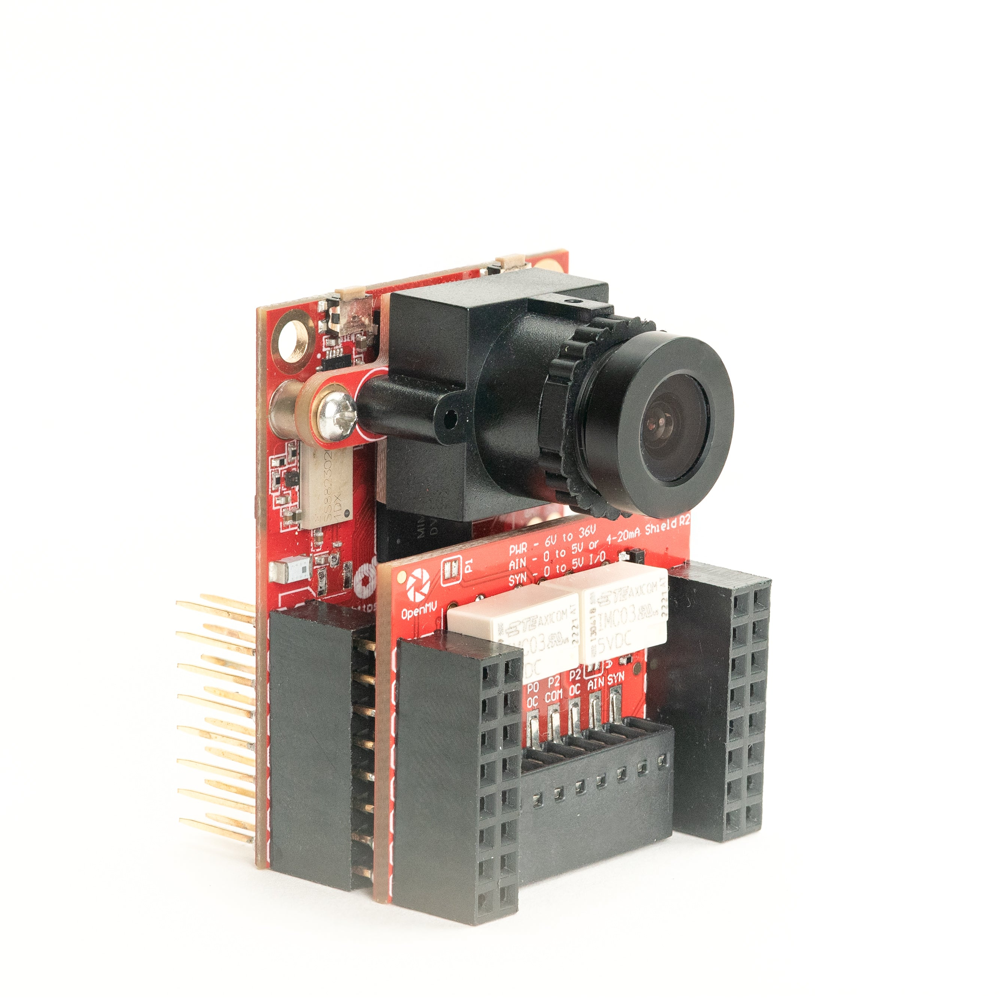
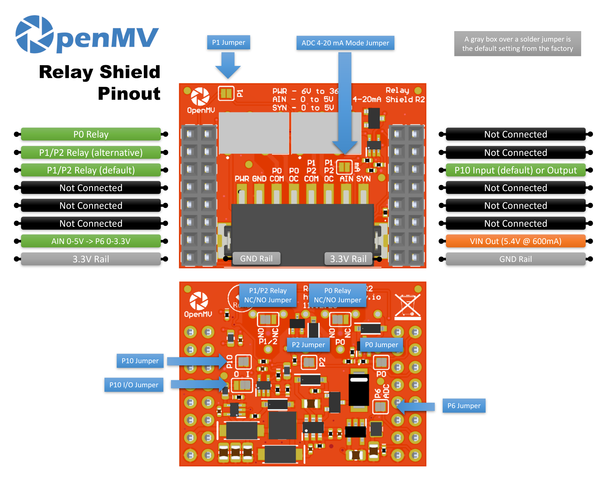

Relay Shield¶
Relay Shield 可讓 OpenMV Cam 切換兩路高功率 AC 或 DC 負載，每個繼電器最高可達 60 W，並具備 6-36 V 輸入、一個 ADC 輸入以及一條供同步用的數位 I/O 線路。
{kind=link}

如需完整的資料表、照片與訂購資訊，請參閱 Relay Shield 產品頁面。
重點特色¶
雙繼電器——各 60 W（15-220 V DC、125-260 V AC）
6-36 V 輸入，具反向電壓耐受能力
0-5 V ADC 輸入，具 ±36 V 過電壓保護
0-5 V 數位 I/O，用於相機同步觸發
接腳圖¶
{kind=link}

接腳參考¶
接腳 |
功能 |
|---|---|
P0 |
繼電器 1 控制 |
P1 |
繼電器 2 控制（替代） |
P2 |
繼電器 2 控制（預設） |
P6 |
經位準位移的 AIN 回讀（P6 上為 0–3.3 V） |
P10 |
SYN——端子台上的開漏式數位 I/O |
PWR 輸入 |
端子台上的 6–36 V 寬輸入（具反向電壓耐受能力） |
AIN 輸入 |
端子台上的類比輸入 |
VIN 輸出 |
由板載穩壓器提供 5.4 V、最高 600 mA |
3.3V 電源軌 |
為擴充板的板載電子元件供電 |
GND 電源軌 |
共用接地 |
備註
AIN 具備高達 ±36 V 的過電壓保護，預設為 0–5 V 電壓輸入，並降壓縮放為 P6 上的 0–3.3 V。將擴充板正面的 4–20 mA 模式分流器橋接起來，即可將 AIN 切換為 4–20 mA 電流迴路輸入。
備註
SYN 是一條開漏式數位線路，相機端上拉至 3.3 V，SYN 端子側上拉至 5 V。預設為輸入——擴充板會將 SYN 上的 0–5 V 位準位移降至 P10 上的 0–3.3 V。變更板載焊接跳線即可將 P10 翻轉為輸出，將 P10 上的 0–3.3 V 位準位移升至 SYN 上的 0–5 V。
備註
P0、P1、P2、P6 與 P10 各接腳皆可回收作為其他用途。P0、P2、P6 與 P10 預設透過背面焊接跳線連接——開斷任一想釋放接腳上的跳線即可。P1 預設為斷開：橋接其正面跳線可改將繼電器 2 接至 P1（並開斷 P2 的背面跳線以釋放 P2）。
備註
繼電器預設為常開（NO）。橋接擴充板底部的焊接跳線可將其切換為常閉（NC）。
使用方式¶
從 P0 與 P1 切換這兩個繼電器:
from machine import Pin
import time
relay1 = Pin("P0", Pin.OUT)
relay2 = Pin("P1", Pin.OUT)
while True:
relay1.on()
relay2.off()
time.sleep(1)
relay1.off()
relay2.on()
time.sleep(1)
透過經位準位移的 P6 接腳讀取 AIN 端子台輸入:
from machine import ADC
import time
ain = ADC("P6")
while True:
v = ain.read_u16() * 3.3 / 65535
print("AIN:", v * (5.0 / 3.3), "V")
time.sleep_ms(100)
對 SYN 線路上的下降緣作出反應——例如，與另一個將 SYN 拉低的裝置同步相機:
from machine import Pin
def on_sync(pin):
print("SYN falling edge")
syn = Pin("P10", Pin.IN)
syn.irq(on_sync, Pin.IRQ_FALLING)